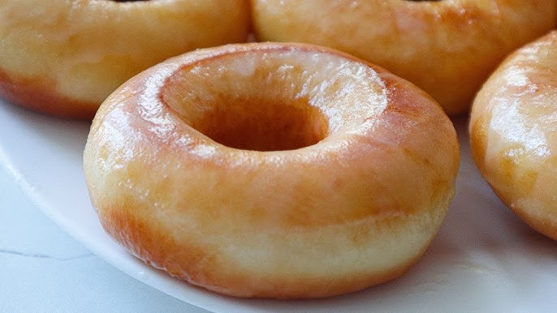

Donuts con Glaseado Clásico y de Chocolate

Ingredientes
Donuts
- 240 ml de leche
- 15 g de levadura fresca (o 5 g de levadura instantánea, o 4 g de levadura seca de panadero)
- 560 g de harina
- 40 g de azúcar
- 6 g de sal
- 20 g de azúcar moreno
- 2 huevos
- 115 g de mantequilla derretida
- Aceite neutral
Glaseado Clásico
- 200 g de azúcar glas
- Chorrito de leche
Glaseado de Chocolate
- 175 g de azúcar glas
- 25 g de cacao en polvo
- Agua
Método
Donuts
- Disuelve la levadura fresca en la leche templada. Resérvalo.
- En un bol grande, añade la harina de trigo, el azúcar, la sal y el azúcar moreno. Mezcla.
- Transfiere la mitad de la mezcla a otro bol.
- Bate dos huevos y añádelos a uno de los boles, junto a la leche con levadura y la mantequilla derretida, pero no caliente. Incorpora todos los ingredientes.
- Añade la otra mitad de harina e incorpora todo de nuevo.
- Transfiere la masa a una superficie de trabajo y amasa de 8 a 10 minutos, o hasta que sea lisa y elástica.
- Transfiere la masa a un bol enharinado, cúbrela con un trapo húmedo, y déjala reposar de 1 a 2 horas, o hasta que haya doblado su tamaño.
- Saca la masa a una superficie y estírala con un rodillo hasta que tenga 1 cm de grosor.
- Corta círculos de 8 cm de diámetro más o menos. Reamasa las sobras, estíralas y corta más donuts.
- Haz los agujeros centrales con un cortador de galletas de 2 cm y medio.
- Transfiere los donuts y sus agujeros a una bandeja cubierta con papel vegetal. Déjalos levar 45 minutos, o hasta que doblen su tamaño, cubiertos con un trapo húmedo.
- Fríe los donuts en aceite de girasol a 180 grados, unos 2 o 3 minutos por cada lado, o hasta que estén dorados.
- Saca los donuts a una rejilla y déjalos enfriar completamente.
- En un bol, mezcla el azúcar glas y el cacao en polvo. Añade agua poco a poco hasta que tenga textura líquida pero espesa. Resérvalo.
- En un bol, añade el azúcar glas y un chorrito de leche entera. Mezcla y añade leche hasta que tenga textura líquida pero espesa. Resérvalo.
- Unta los donuts en los glaseados y déjalos enfriar completamente en la nevera, durante al menos 15 minutos, o hasta que se solidifiquen los glaseados.